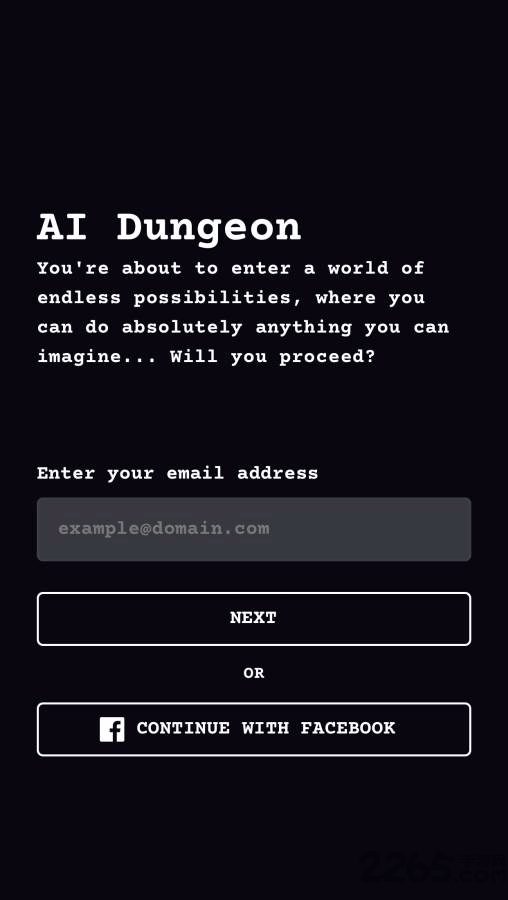

AI Dungeon 零基础入门：用 AI 当你的专属故事搭档
你有没有想过，只要说一句话就能开启一场无限延伸的冒险？本文从下载安装到第一次写故事，五步带你上手 AI Dungeon，零基础无门槛。
这篇能带你从完全不懂到用起来，不需要任何编程基础，也不需要懂什么大语言模型——跟着点几步就行。
它到底是干嘛的
想象你有一个永远不打烊、永远有新点子的讲故事搭档。你说一句"我推开了酒馆那扇吱呀作响的木门"，它就接下去描述：酒馆里飘着麦香、角落里有个戴兜帽的人抬头看了你一眼、吧台上摆着一把你眼熟的匕首……而且你可以随时改方向，说"等等，我不去酒馆了，我要去城门口"，它立刻顺着新方向继续编。
AI Dungeon 就是这样一个东西——一个 AI 驱动的无限文字冒险引擎。它背后是大语言模型在不停地"续写"你的故事。你输入一个动作或一句话，AI 根据之前的所有内容往下写一段，然后轮到你继续，如此循环，没有固定剧情、没有预设结局，完全由你和 AI 一起创造。
它的官网提供了免费和付费两种档位，免费档就能玩基础功能，付费档解锁更大的上下文窗口和更强的模型。对新手来说，先用免费档体验完全足够。

五分钟上手：从安装到第一次跑通
好，下面一步步来，跟着做就行：
第一步：下载安装
AI Dungeon 支持网页版和手机端 App。安装包从官方下载拿，手机端去应用商店搜 "AI Dungeon" 就能找到。网页版直接在浏览器打开就行，不用装任何东西。
第二步：注册账号
打开之后会让你注册一个账号，邮箱或 Google/Facebook 登录都可以。登录后进入主界面，你会看到一堆别人做的"场景"（Scenario）——相当于预设好的故事模板。
第三步：挑一个场景开玩
主界面往下滑，找一个标题看起来有意思的场景，比如"赛博朋克侦探"或者"魔法学院新生"。点击进入，然后点那个大大的 Play 按钮。
很多场景启动时会问你几个问题，比如"你的角色叫什么？""你身上带着什么？"——认真看每个问题下面的格式提示，按它建议的格式回答。比如提示写"格式建议：张三 / 失去记忆的赏金猎人"，你就按这个格式填，别只写"张三"，否则 AI 开场会有缺口。
第四步：写你的第一句输入
场景启动后，AI 会先写一段开场，然后轮到你输入。在底部的输入框里打字——不用想太复杂，就写一个动作或一句话，比如"我环顾四周，注意到墙上有一幅奇怪的画"或者"那个兜帽人开口说话了"。
第五步：AI 续写，循环下去
你输入完点发送，AI 会根据你刚才的话往下写一段。看完它写的，再轮到你继续输入……就这样一轮一轮，故事就在你和 AI 的对话中不断展开。
就这么简单。到这里你已经跑通了 AI Dungeon 的核心玩法。

上手后先玩这三个功能
基础玩法跑通了，下面三个功能是新手最值得先碰的——掌握了它们，你的故事体验会从"还行"变成"真香"。
Story Cards：给 AI 塞一张"小抄"
你有没有过这种体验：AI 写着写着就忘记了你的角色叫什么、或者把某个 NPC 的性格写歪了？Story Cards 就是解决这个问题的。
简单说，Story Cards 是你给角色、地点、物品做的小卡片，每张卡片写一段描述，加上几个"触发器关键词"。当剧情里出现这些关键词时，AI 就会自动把这张卡片的内容"翻出来"看一眼。
你会看到什么：给你的主角建一张卡，写清楚姓名、外貌、性格、身上带什么，触发器关键词就填主角的名字。之后每次剧情提到这个名字，AI 就会记得主角是谁。
这意味着什么：故事不会再"人设崩塌"。你还可以给重要的 NPC、关键道具、甚至特定地点都建卡，让 AI 在这些元素出现时自动保持设定一致。
Memory：必须记住的那些事
Memory 是一个你自己写的"备忘录"字段，AI 在每一轮续写之前都会看一眼。
和 Story Cards 不同，Memory 的内容每一轮都会出现在 AI 的视野里，不需要触发器触发。所以 Memory 里适合放那些"一直都重要"的东西——比如当前任务目标、世界的核心规则、你最不想让 AI 搞混的设定。
你会看到什么：打开冒险设置，找到 Memory 字段，输入一段话，比如"我现在的目标是找到失踪的妹妹，她最后出现在东区码头。这个世界里的魔法使用者叫符文使，需要消耗精神力。"
这意味着什么：AI 每一轮续写前都会扫一眼这段文字，你的故事主线不会跑偏。但注意别写太长——300 字以内够用了，写多了反而浪费空间。
AI Instructions：告诉 AI "怎么写"
这是一个很多新手会忽略但其实最强大的功能。AI Instructions 是一段写给 AI 的写作指令，你可以告诉它用什么叙事风格、对话怎么写、节奏怎么把控。
你会看到什么：默认情况下 AI 写的是比较通用的风格。但如果你在 AI Instructions 里写"用第三人称有限视角，段落短、节奏紧凑，每个 NPC 的说话方式要有辨识度"，你会发现 AI 写出来的东西立刻不一样了。
这意味着什么：你可以把 AI Dungeon 从"随便玩玩的玩具"变成"有明确风格的创作工具"。想写硬汉派推理就写推理风格指令，想写温暖治愈向就换一套。
小白的三个常见疑问
玩了一阵之后，你大概率会遇到下面这三个问题。提前知道答案，不用等它真发生了才慌。
疑问一：AI 为什么会"忘事"？
你玩了几十回合，发现 AI 突然不记得你的角色叫什么了，或者把之前发生的事搞混了。这不是 bug，是 AI Dungeon 的底层机制决定的。
AI 模型一次能"看到"的文本量是有限的，这个上限叫上下文窗口。当你的故事超过这个上限，AI Dungeon 会自动把最早的内容"挤出去"——这就是"忘事"的原因。
免费档的上下文窗口比较小，付费档会大很多。但不管哪个档位，玩到一定回合数后都会遇到这个问题。你可以用 Memory 把关键设定"钉"住，或者玩到一定阶段开一个新冒险继续。想系统了解上下文窗口怎么管理，可以去看AI Dungeon文档，里面有 Token 预算分配的详细说明。
疑问二：AI 跑偏了怎么办？
有时候 AI 写的内容完全不符合你的预期，甚至越写越离谱。别担心，有三个按钮可以救场：
- Retry（重试）：让 AI 重写刚才那一轮。AI 有随机性，重写可能得到完全不同的结果。
- Edit（编辑）：直接修改 AI 写的那段文字，想改哪改哪。改完继续玩。
- Undo（回退）：退回上一轮，从那里重新开始。
这三个功能是 AI Dungeon 的标配，也是"驯服"AI 的必备工具。别觉得用它们是"作弊"——实际上老玩家每回合都在用。
疑问三：我写的设定为什么 AI 没反应？
你明明在 Memory 里写了某个设定，或者给角色建了 Story Card，但 AI 好像没看到一样。常见原因有两个：
第一，Story Card 的触发器关键词没出现在最近的剧情里。Story Card 只有当剧情文本里包含你设置的关键词时才会被激活。如果你的触发器是"张三"，但最近几轮没人提到"张三"，AI 就看不到那张卡。
第二，AI Instructions 写得太模糊。"请写得有趣一点"这种话对 AI 来说等于没说。AI 听不懂"有趣"是什么意思，你得给具体指令——"每 3-5 个回合要有一个意外或转折"、"用简洁的动词，不要过度使用形容词"。
写在最后
到这里你已经能比较顺畅地用 AI Dungeon 玩起来了。从一个场景开始，一边玩一边摸索 Story Cards、Memory 和 AI Instructions 的用法，你会发现 AI Dungeon 的上限很高——有人用它来写小说草稿，有人用它来做跑团（TRPG）的 AI 主持人，有人纯粹就是想看看 AI 能编出什么离谱的故事。
AI Dungeon 的资料我在三个仓库都同步了，想离线翻阅或给场景做二次开发的话，GitHub、Gitee、GitCode 上都能找到对应的内容。